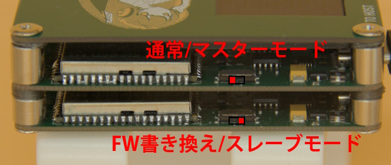
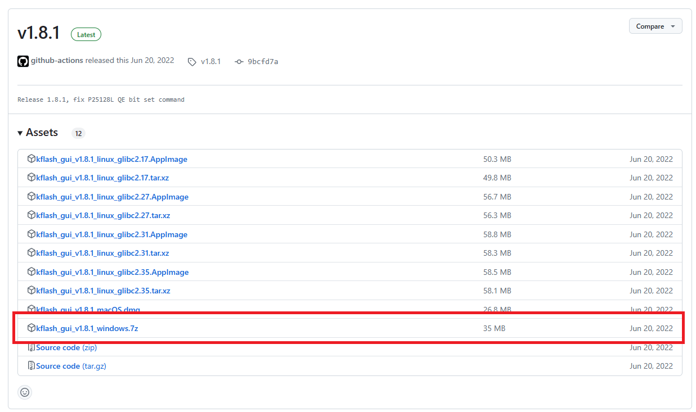
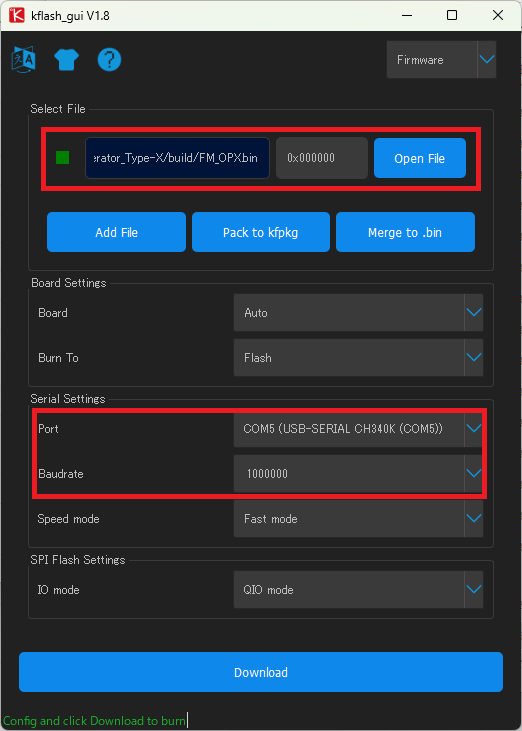
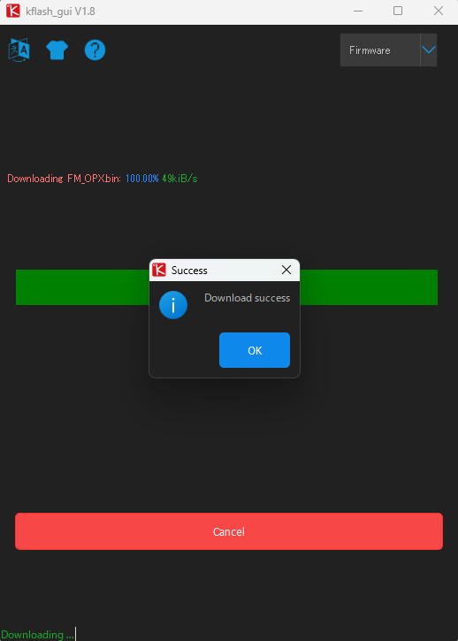
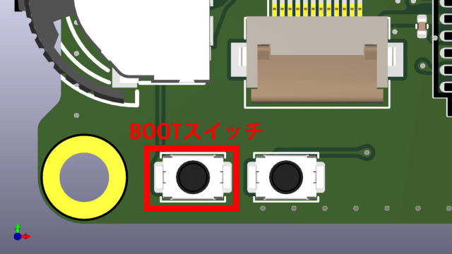
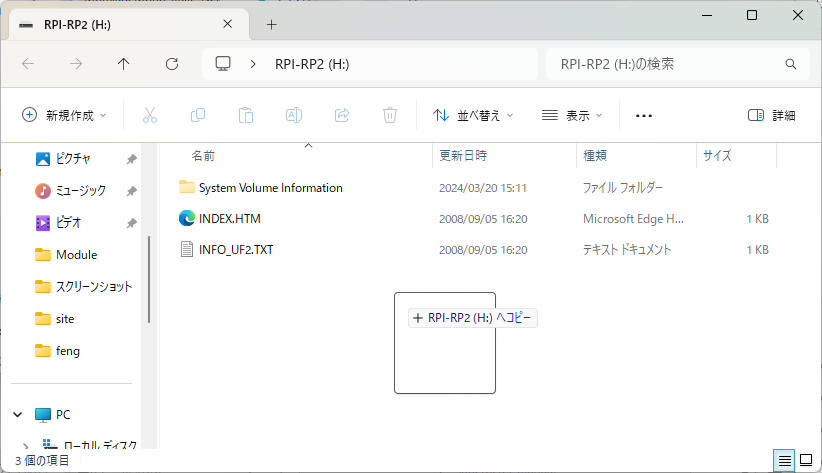

この項では本音源のファームウェアを更新する方法を説明します。
はじめに
本音源は波形生成プロセッサ(Kendryte K210)と周辺制御プロセッサ(RP2040)の二つのマイコンで構成されています。 そのため、本音源のファームウェアを更新するにはそれぞれに適切なファームウェアを書き込む必要があります。
ダウンロードから最新のファームウェアをダウンロードし、次の手順に従ってアップデートを行ってください。
波形生成プロセッサのファームウェア更新方法
モード切り替え
まず、波形生成プロセッサのファームウェアを更新するためにモードを切り替えます。
警告
モードの切り替えは必ずUSBケーブルを抜いた状態で行ってください！
モードの切り替えスイッチは内部でUSBのバススイッチの制御に使用しておりスイッチを操作することで物理的に経路を変更しています。
ケーブルが刺さった状態での変更は予期しない不具合に繋がります！

波形生成プロセッサのファームウェアを書き込むためには画像下のスイッチの位置に合わせます。
裏には▲でポジションを示す記号がありますので参考にしてください。
書き込むファームウェアは拡張子が「.bin」のものです．
情報
使用しているUSB-シリアル変換IC(CH340)のドライバの問題によりWindows環境では正しく書き込めないことがあります。
その場合はLinux環境で書き込みを行うと成功することがわかっています．
Windows環境での書き込みに問題が発生した場合はXなどで作者にご連絡ください．
2025/03/07現在Windows 11 24H2で書き込みができることを確認しています．
Windows + kflash_gui(おすすめ)
次にGUIから書き込みが可能なkflash_guiによる方法を説明します。
こちらはインストール不要で書き込めるのでWindows環境の方にはお勧めです。
まず、GitHubのReleasesからkflash_guiをダウンロードします。

ダウンロードしたzipファイルを適当な場所に展開し、kflash_gui.exeを実行します。

赤枠で囲っている項目を設定します。
| 引数 | 意味 |
|---|---|
| Select File | 書き込むファームウェア |
| Port | COMポートを指定、環境によって異なります。 表示名はCH340Kになっています |
| Baudrate | ボーレートを1Mbps(=1,000,000bps)に設定 初期値では速すぎるため変更、1Mbpsが実用上の上限 |
設定ができたらDownloadを押して書き込みを開始します。
次のような画面が表示されたら書き込みは成功です。

Ubuntu + kflash
Pythonとpipをインストールしていない場合はインストールします。
$ sudo apt install python3 python3-pip
$ python3 -v
Python 3.10.12
次に書き込みツールのkflashをインストールします。
$ sudo pip3 install kflash
Collecting kflash
Downloading kflash-1.1.6-py3-none-any.whl (49 kB)
━━━━━━━━━━━━━━━━━━━━━━━━━━━━━━━━━━━━━━━━ 49.0/49.0 KB 2.6 MB/s eta 0:00:00
Collecting pyserial>=3.4
Downloading pyserial-3.5-py2.py3-none-any.whl (90 kB)
━━━━━━━━━━━━━━━━━━━━━━━━━━━━━━━━━━━━━━━━ 90.6/90.6 KB 5.9 MB/s eta 0:00:00
Collecting pyelftools>=0.25
Downloading pyelftools-0.31-py3-none-any.whl (180 kB)
━━━━━━━━━━━━━━━━━━━━━━━━━━━━━━━━━━━━━━━━ 180.5/180.5 KB 12.9 MB/s eta 0:00:00
Installing collected packages: pyserial, pyelftools, kflash
Successfully installed kflash-1.1.6 pyelftools-0.31 pyserial-3.5
WARNING: Running pip as the 'root' user can result in broken permissions and conflicting behaviour with the system package manager. It is recommended to use a virtual environment instead: https://pip.pypa.io/warnings/venv
$ kflash
usage: kflash [-h] [-p PORT] [-f FLASH] [-b BAUDRATE] [-l BOOTLOADER] [-e] [-k KEY] [-v] [--verbose] [-t] [-n] [-s]
[-B {kd233,dan,bit,bit_mic,goE,goD,maixduino,trainer}] [-S] [-A ADDR] [-L LENGTH] [-i IOMODE]
firmware
kflash: error: the following arguments are required: firmware
場合によってはPATHを通す必要があるかもしれません。
また、クリーンインストールしたUbuntuではシリアルポートを使用する権限がない場合があるためここで設定を行います。
$ sudo adduser $USER dialout
ユーザー `luna' をグループ `dialout' に追加しています...
ユーザ luna をグループ dialout に追加
完了。
注意
設定後は設定を反映させるために必ずPCを再起動してください。
最後に書き込みを行います。
$ kflash -b 1000000 tg.bin
[INFO] COM Port Auto Detected, Selected /dev/ttyUSB0
[INFO] Default baudrate is 115200 , later it may be changed to the value you set.
[INFO] Trying to Enter the ISP Mode...
.
[INFO] Automatically detected dan/bit/trainer
[INFO] Greeting Message Detected, Start Downloading ISP
Downloading ISP: |==============================================================| 100.0% 10kiB/s
[INFO] Booting From 0x80000000
[INFO] Wait For 0.1 second for ISP to Boot
[INFO] Boot to Flashmode Successfully
[INFO] Selected Baudrate: 1000000
[INFO] Baudrate changed, greeting with ISP again ...
[INFO] Boot to Flashmode Successfully
[INFO] Selected Flash: On-Board
[INFO] Initialization flash Successfully
[INFO] Flash mode: DIO, Dual SPI serial throughput rates reach around 20 Mbps
Programming BIN: |==============================================================| 100.0% 47kiB/s
[INFO] Rebooting...
[INFO] The ISP stub tells us the k210 is rebooting ...
引数の意味は次のとおりです。
| 引数 | 意味 |
|---|---|
-b 1000000 |
ボーレートを1Mbps(=1,000,000bps)に設定 初期値では遅すぎるため変更、1Mbpsが実用上の上限 |
tg.bin |
書き込むファームウェア |
書き込みが完了したら
忘れずにスイッチをUSBケーブルを抜いてからもとの位置に戻してください。
周辺制御プロセッサのファームウェア更新方法
書き込むファームウェアは拡張子が「.uf2」のものです．
モード切り替え
まず、周辺制御プロセッサのファームウェアを更新するためにモードを切り替えます。
警告
モードの切り替えは必ずUSBケーブルを抜いた状態で行ってください！
モードの切り替えスイッチは内部でUSBのバススイッチの制御に使用しておりスイッチを操作することで物理的に経路を変更しています。
ケーブルが刺さった状態での変更は予期しない不具合に繋がります！
波形生成プロセッサのファームウェアを書き込むためには画像上のスイッチの位置に合わせます。
次に、USBケーブルを次に示す本体右下のBOOTスイッチを押しながら接続してください。

情報
USBケーブル接続時でも、BOOTスイッチを押しっぱなしにしながら隣のRESETボタンを一回押すことによってブートローダモードに入ることができます。
ファームウェアの書き込み
RPI-RP2という名称のUSBドライブとして認識されるため*.uf2をコピーします。
コピー完了と同時に自動で接続が解除され再起動します。

これで書き込みは完了です。